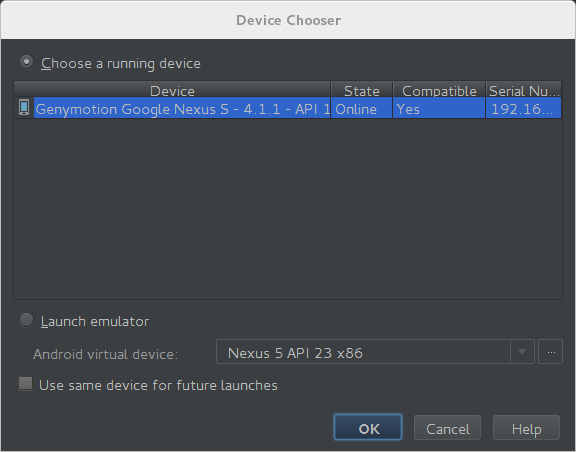

Laborator 01. Introducere în Programarea Android
Sistemul de Operare Android
Android - Prezentare Generală
Android este un sistem de operare mobil bazat pe o versiune modificată de Linux (pentru gestiunea componentelor hardware, a proceselor și a memoriei) și biblioteci Java (pentru telefonie (audio/video), conectivitate, grafică, programarea interfețelor cu utilizatorul). Este un produs open-source (putând fi dezvoltat de producătorii de dispozitive mobile cu extensii proprietare pentru a-și particulariza platforma), dezvoltat în prezent de compania Google, conceput pe ideea transformării dispozitivelor mobile în adevărate mașini de calcul. Google încearcă totuși să realizeze tranziția de la AOSP (Android Open Source Project) către GMS (Google Mobile Services), peste care sunt construite cele mai multe aplicații, în încercarea de a-și apăra acest proiect în fața concurenței. În acest sens, a fost dezvoltat proiectul Google One, prin care este oferit un set de specificații (ecran de 4.5 inchi - 845×480 pixeli, procesor quad-core, memorie 1GB RAM, spațiu de stocare 4GB, suport pentru dual sim) pe care producătorii de dispozitive mai ieftine trebuie să le respecte astfel încât acestea să fie compatibile cu un sistem Android, fără a întâmpina probleme de performanță. Acesta include toate aplicațiile și serviciile Google, la care se pot adăuga și altele, furnizate de producător sau operatorul de telefonie mobilă. În acest fel, se asigură calitatea (păstrând renumele Android) și controlul asupra veniturilor. Comunitatea Android este în creștere, mai multe companii renunțând la propriul sistem de operare în favoarea acestuia, pentru a putea face față fenomenului iPhone.
În condițiile în care pe piața dispozitivelor mobile aplicațiile sunt cele care aduc avantajul competițional, beneficiul Android este reprezentat de abordarea unitară pentru dezvoltarea aplicațiilor. Cu alte cuvinte, o aplicație dezvoltată conform API-ului Android va putea rula pe mai multe dispozitive mobile pe care este instalat sistemul de operare respectiv.
Versiuni Android
| Versiune Android | Nivel API | Data Lansării | Nume de Cod | Cota de Piață |
|---|---|---|---|---|
| 6.0 - 6.0.1 | 23 | 05.10.2015 | Marshmellow | 1.2% |
| 5.1 - 5.1.1 | 22 | 09.03.2015 | Lollipop | 17.1% |
| 5.0 - 5.0.2 | 21 | 12.11.2014 | Lollipop | 17.0% |
| 4.4W - 4.4W.2 | 20 | 25.06.2014 | KitKat with wearable extensions | |
| 4.4 - 4.4.4 | 19 | 31.10.2013 | KitKat | 35.5% |
| 4.3 | 18 | 24.07.2013 | Jelly Bean | 3.4% |
| 4.2.x | 17 | 13.11.2012 | Jelly Bean | 11.7% |
| 4.1.x | 16 | 09.07.2012 | Jelly Bean | 8.8% |
| 4.0.3 - 4.0.4 | 15 | 16.12.2011 | Ice Cream Sandwich | 2.5% |
| 4.0 - 4.0.2 | 14 | 19.10.2011 | Ice Cream Sandwich | |
| 3.2 | 13 | 15.07.2011 | Honeycomb | |
| 3.1 | 12 | 10.05.2011 | Honeycomb | |
| 3.0 | 11 | 22.02.2011 | Honeycomb | |
| 2.3.3 - 2.3.7 | 10 | 09.02.2011 | Gingerbread | 2.7% |
| 2.3 - 2.3.2 | 9 | 06.12.2010 | Gingerbread | |
| 2.2 - 2.2.3 | 8 | 20.05.2010 | Froyo | 0.1% |
| 2.1 | 7 | 12.01.2010 | Eclair | |
| 2.0.1 | 6 | 03.12.2009 | Eclair | |
| 2.0 | 5 | 26.10.2009 | Eclair | |
| 1.6 | 4 | 15.09.2009 | Donut | |
| 1.5 | 3 | 30.04.2009 | Cupcake | |
| 1.1 | 2 | 09.02.2009 | ||
| 1.0 | 1 | 23.09.2008 |
Pentru identificarea versiunilor se folosesc, de regulă, trei sisteme:
- un număr, ce respectă formatul major.minor[.build], desemnând dacă modificările aduse sunt substanțiale sau reprezintă ajustări ale unor probleme identificate anterior; versiunea curentă este 6.0.1, lansată la sfârșitul anului 2015;
- un nivel de API (același putând grupa un număr de mai multe versiuni), prin care se indică funcționalitățile expuse către programatori; versiunea curentă are nivelul de API 23;
- o denumire, având un nume de cod inspirat din lumea dulciurilor; termenii respectivi încep cu inițiale care respectă ordinea alfabetică; versiunea curentă este Marshmellow.
În momentul în care se ia decizia cu privire la versiunea pentru care se dezvoltă o aplicație Android, trebuie avute în vedere și cotele de piață ale dispozitivelor mobile. Dezvoltarea unei aplicații Android pentru cea mai nouă versiune are avantajul de a se putea utiliza cele mai noi funcționalități expuse prin API. Dezvoltarea unei aplicații Android pentru cea mai veche versiune are avantajul unei adresabilități pe scară largă. Un compromis în acest sens poate fi obținut prin intermediul bibliotecilor de suport, dezvoltate pentru fiecare versiune, prin intermediul cărora pot fi utilizate la niveluri de API mai mici funcționalități din niveluri de API mai mari (în limita capabilităților dispozitivului mobil respectiv). Utilizarea acestora reprezintă o practică recomandată în dezvoltarea aplicațiilor Android.
Arhitectura Android
Arhitectura sistemului de operare Android cuprinde cinci secțiuni grupate pe patru niveluri:

- Kernelul Linux (cu unele modificări) conține driver-ele pentru diferitele componente hardware (ecran, cameră foto, tastatură, antenă WiFi, memorie flash, dispozitive audio), fiind responsabil cu gestiunea proceselor, memoriei, perifericelor (audio/video, GPS, WiFi), dispozitivelor de intrare/ieșire, rețelei și a consumului de energie; de asemenea, au fost implementate și unele îmbunătățiri:
- Binder, sistemul de comunicație inter-proces, a fost adaptat, întrucât reprezintă mediul de comunicație principal dintre aplicații și sistemul de operare, inclusiv funcțiile (serviciile) dispozitivului mobil; expunerea sa este realizată prin intermediul AIDL (Android Interface Definition Language) prin care pot fi manipulate obiecte transformate în primitive utilizate la comunicația propriu-zisă dintre aplicații și sistemul de operare;
- Logger, sistemul de jurnalizare, este esențial în cazul în care trebuie realizată depanarea aplicațiilor, în special pentru a detecta anumite situații particulare (informații cu privire la rețea, senzori); acesta este capabil să agrege datele provenite atât de la aplicația propriu-zisă cât și de la sistemul de operare, datele fiind disponibile prin intermediul unor utilitare specializate;
- sistemul prin intermediul căruia se previne transferul sistemului de operare într-o stare de latență (wake locks), în care consumul de energie este redus, întrucât se blochează execuția oricărei aplicații; utilizarea unui astfel de mecanism trebuie realizată cu precauție, întrucât poate determina epuizarea bateriei;
- sistemul de alarme oferă posibilitatea ca anumite sarcini să fie planificate la anumite momente de timp, putând fi executate, chiar dacă sistemul de operare se găsește într-o stare de latență;
- Viking Killer este un mecanism prin care sistemul de operare revendică memoria utilizată, atunci când nivelul acesteia atinge un anumit prag (aplicațiile Android care au fost rulate anterior sunt de regulă stocate în memorie pentru a se putea comuta rapid între ele, de vreme ce încărcarea în memorie este o operație costisitoare);
- YAFFS2 (Yet Another Flash File System) este un sistem de fișiere adecvat pentru cipuri flash bazate pe porți NAND; platforma Android este stocată pe mai multe partiții, ceea ce îi conferă flexibilitate la actualizări, împiedicând modificarea sa în timpul rulării (
/boot- conține secvența de pornire,/system- stochează fișierele de sistem și aplicațiile încorporate,/recovery- deține o imagine din care se poate restaura sistemul de operare,/data- include aplicațiile instalate și datele aferente acestora,/cache- utilizată pentru fișiere temporare, folosind memoria RAM, pentru acces rapid).
- Bibliotecile (user-space) conțin codul care oferă principalele funcționalități a sistemului de operare Android, făcând legătura între kernel și aplicații. Sunt incluse aici motorul open-source pentru navigare WebKit, biblioteca FreeType pentru suportul seturilor de caractere, baza de date SQLite utilizată atât ca spațiu de stocare cât și pentru partajarea datelor specifice aplicațiilor, biblioteca libc (Bionic), biblioteca de sistem C bazată pe BSD și optimizată pentru dispozitive mobile bazate pe Linux, biblioteci pentru redarea și înregistrarea de conținut audio/video (bazate pe OpenCORE de la PacketVideo), biblioteci SSL pentru asigurarea securității pe Internet și Surface Manager, bibliotecă pentru controlul accesului la sistemul de afișare care suportă 2D și 3D. Aceste biblioteci nu sunt expuse prin API, reprezentând detalii de implementare Android.
- Motorul Android rulează serviciile de platformă precum și aplicațiile care le utilizează, fiind reprezentat de:
- ART (Android Runtime) este mașina virtuală Java care a fost implementată începând cu versiunea 5.0, folosind un tip de compilare AOH (Ahead of Time), în care bytecode-ul este transpus în cod mașină la momentul instalării, astfel încât acesta este executat direct de mediul dispozitivului mobil; compatibilitatea cu versiuni anterioare (care folosesc mașina virtuală Dalvik, ce se bazează pe un compilator JIT - Just in Time) este asigurată prin transformarea pachetelor în format .dex (Dalvik Executable) la momentul compilării, urmând ca translatarea în format .oat să se realizeze la momentul instalării; fiecare aplicație Android rulează în procesul propriu, într-o instanță a mașinii virtuale ART, izolând astfel codul și datele sale prin intermediul unor permisiuni, care se aplică inclusiv la comunicația prin intermediul interfețelor de comunicare oferite de sistemul de operare Android;
- Zygote este procesul care gestionează toate aplicațiile, fiind lansat în execuție odată cu sistemul de operare:
- inițial, creează o instanță a mașinii virtuale Java pentru sistemul de operare Android, în contextul căreia plasează serviciile de bază: gestiunea energiei, telefonie, furnizori de conținut, gestiunea pachetelor, serviciul de localizare, serviciul de notificări;
- atunci când este necesar să lanseze în execuție o anumită aplicație, se clonează, partajând astfel componentele sistemului de operare Android, astfel încât să se asigure performanța (timp de execuție) și eficiența (memorie folosită), de vreme ce fiecare aplicație trebuie rulată în propria sa instanță a mașinii virtuale Java;
- Cadrul pentru Aplicații expune diferitele funcționalități ale sistemului de operare Android către programatori, astfel încât aceștia să le poată utiliza în aplicațiile lor.
- La nivelul de aplicații se regăsesc atât produsele împreună cu care este livrat dispozitivul mobil (Browser, Calculator, Camera, Contacts, Clock, FM Radio, Launcher, Music Player, Phone, S Note, S Planner, Video Player, Voice Recorder), cât și produsele instalate de pe Play Store sau cele dezvoltate de programatori.
Funcționalități Android
De vreme ce Android este un produs open-source, producătorii având posibilitatea de a-l modifica în mod gratuit, nu există configurații hardware sau software standard. Totuși, Android implementează următoarele funcționalități:
- stocare - folosește SQLite, o bază de date relațională ce utilizează resurse puține
- conectivitate - suportă GSM/CDMA, GPRS, EDGE, 3G, IDEN, EV-DO, UMTS, Bluetooth (inclusiv A2DP si AVRCP), WiFi, LTE, WiMAX
- WiFi Direct - tehnologie care permite aplicațiilor să se descopere și să se interconecteze peste o conexiune punct-la-punct având lățime de bandă mare
- Android Beam - o tehnologie bazată pe NFC (Near Field Communication) care permite utilizatorilor să partajeze conținut instant, prin apropierea dispozitivelor mobile respective
- mesagerie - atât SMS cât și MMS
- navigare pe Internet - bazat pe motorul open source pentru navigare WebKit impreună cu motorul JavaScript de la Chrome V8 suportând HTML5 și CSS3
- multimedia - suportă formatele H.263, H.264 (într-un container 3GP sau MP4), MPEG-4 SP, AMR, AMR-WB (într-un container 3GP), AAC, HE-AAC (într-un container MP4 sau 3GP), MP3, MIDI, Ogg Vorbis, WAV, JPEG, PNG, GIF si BMP
- grafică - 2D optimizată, 3D (OpenGL ES)
- senzori - accelerometru, cameră foto, busolă digitală (magnetometru), senzor de proximitate, GPS / AGPS
- multi-touch - suportă ecrane cu posibilitate de contact în mai multe puncte concomitent
- multi-tasking - permite rularea de aplicații cu mai multe fire de execuție
- GCM (Google Cloud Messaging) - serviciu ce permite dezvoltatorilor să trimită date de dimensiuni mici către utilizatori pe dispozitive Android, fără a avea nevoie de o soluție de sincronizare proprietară
- multi-Language - suport pentru text unidirecțional și bidirecțional
- suport pentru aplicații Flash (până în versiunea 4.3)
- legătură la Internet - suportă partajarea conexiunilor la Internet ca punct de distribuție cu fir / fără fir
Android vs. iPhone
Piața de telefoane inteligente este dominată de Android (care - potrivit estimărilor - își va menține supremația până în 2018), cu 82.8% (peste un miliard de dispozitive vândute) pe întreg anul 2015, în timp ce Apple deține doar 13.9%, la nivel mondial.
În 2015, numărul de aplicații disponibile pentru platforma Android le-a depășit pe cele destinată dispozitivelor Apple (1.6 milioane, comparativ cu 1.5 milioane). Și în privința numărului de descărcări Android se află în fața Apple cu aproximativ 25%. Totuși, politica de distribuție a aplicațiilor (faptul că aplicațiile iPhone pot fi instalate numai prin intermediul App Store, în timp ce Android pune la dispoziție mai multe posibilități - Play Store, Amazon App Store, prin conexiune USB de la calculator, prin email sau prin pagina Internet a organizației), la care se adaugă numărul mare de programe gratuite și posibilitatea de piratare mai ușoară se traduce prin încasările obținute, Apple generând un profit mult mai mare din aplicații decât Google (cifrele oficiale nu sunt disponibile încă). O altă explicație a acestei situații este dată și de potența financiară a posesorilor de produse Apple (valoarea unui iPhone fiind de aproximativ 600 dolari) față de puterea de cumpărare a persoanelor ce dețin un telefon Android (al cărui preț mediu este de 200-300 dolari), existând o corespondență directă cu disponibilitatea de a achiziționa aplicații. De asemenea, statisticile arată că utilizatorii Apple își folosesc mult mai intens dispozitivele pentru accesarea de conținut Internet decât cei cumpărătorii de produse echipate cu Android.
Aplicațiile destinate dispozitivelor mobile reprezintă un segment extrem de productiv al economiei, doar vânzările din AppStore depășind încasările obținute din producția de filme de la Holywood. Ca tematică, cele mai multe aplicații aparțin domeniului social (jocuri, fotografie, muzică, aplicații culinare, stil de viață), urmate de cele destinate gestionării unor segmente ale unor afaceri.
În privința limbajului de programare utilizat pentru dezvoltarea de aplicații mobile, iPhone folosește Objective-C, similar cu C++, care nu se bucură însă de o răspândire prea largă (cu excepția aplicațiilor pentru iPhone), în timp ce Android utilizează Java (limbajul de programare cel mai adoptat pe scară largă în cadrul corporațiilor) dar și C/C++, prin care se pot apela (cu o oarecare dificultate) aplicații native, prin suport JNI (numărul bibliotecilor disponibile în cazul C/C++ este mai redus decât în Java, însă viteza aplicațiilor este mai mare). Dezvoltarea aplicațiilor pentru iPhone se poate realiza numai folosind mașini Mac (echipate cu MacOS), în timp ce aplicațiile Android pot fi scrise în orice sistem de operare cu Java și Eclipse (atât PC-uri cât și Mac-uri echipate cu Windows, Linux sau MacOS). În această situație, se pune problema cotelor de piață ale sistemelor de operare în cadrul companiilor dezvoltatoare de software, care creează sau nu oportunități pentru dezvoltarea unui anumit tip de aplicații (la începutul lui 2016, sistemele de operare Windows dețineau 90,60% din piață, OS X 7,68%, sistemele de operare cu kernel Linux 1,71%, iar alte sisteme de operare 0,01%).
Așadar, dacă pentru utilizare personală nu se poate stabili un câștigător clar între Android și iPhone (deși produsul celor de la Apple pare să aibă un ușor avantaj printr-un număr mai mare de aplicații și prin loialitatea clienților), în cazul aplicațiilor dezvoltate de corporații situația este inversă, date fiind posibilitățile de instalare și limbajul de programare folosit.
Comunitatea programatorilor Android
Ajunsă deja la a cincea versiune, Android este o platformă care beneficiază de experiența a numeroși dezvoltatori ce poate fi exploatată:
- Google Android Training conține o serie de tutoriale și exemple de clase grupate în funcție de diferite subiecte, utile pentru deprinderea cunoștințelor de bază pentru dezvoltarea aplicațiilor Android.
- Stack Overflow este un forum pentru programatori editat în mod colaborativ, conținând întrebări și răspunsuri la acestea (cele mai bune putând fi identificate cu ușurință prin voturile primite de la participanți). Este destul de probabil ca o întrebare să își găsească deja răspunsul pe acestă resursă.
- Android Discuss este o listă de discuții monitorizată îndeaproape de echipa Android de la Google astfel încât reprezintă un loc unde pot fi clarificate numeroase nelămuriri putând fi însușite diferite sfaturi și trucuri.
Cerințe pentru dezvoltarea unei aplicații Android (obligatoriu)
Pentru dezvoltarea unei aplicații Android sunt necesare:
- SDK-ul de Android, pentru care se descarcă definițiile corespunzătoare unuia sau mai multor niveluri de API
- un mediu integrat de dezvoltare (IDE)
- Elipse Mars 1 (4.5.1), cu plugin-ul ADT (Android Developer Tools)
- un dispozitiv pe care să se ruleze aplicațiile
- un emulator
- Android Virtual Device (livrat împreună cu SDK-ul de Android)
- un telefon mobil cu sistemul de operare Android pentru care s-a dezvoltat aplicația
Pentru a se putea rula o aplicație pe un dispozitiv mobil fizic, trebuie să se activeze posibilitatea de depanare prin USB, din Settings → System → Developer Options. Această opțiune trebuie activată, ca de altfel și opțiunea Debugging → Android Debugging (pe unele sisteme poate apărea ca USB Debugging).

În situația în care opțiunea Developer Options nu este disponibilă, aceasta poate fi vizualizată prin intermediul modului Developer, obțiunut prin apăsarea de mai multe ori asupra opțiunii Build Number din secțiunea Settings → System → About Phone.

Dacă telefonul nu este recunoscut la conectarea prin USB, trebuie instalate niște reguli pentru udev, conform instrucțiunilor de pe stackexchange:
student@eim2016:~$ sudo bash student@eim2016:~# lsusb
După ce s-a identificat dispozitivul mobil (prin intermediul comenzii lsusb), se precizează o regulă pentru acesta:
student@eim2016:~# gedit /etc/udev/rules.d/51-android.rules
- /etc/udev/rules.d/51-android.rules
SUBSYSTEM=="usb", ATTR{idVendor}=="18d1", ATTR{idProduct}=="d002", MODE="0660", GROUP="plugdev", SYMLINK+="android%n"
Se reîncarcă dispozitivele conectate prin USB:
student@eim2016:~# /etc/init.d/udev restart
Mai multe informații sunt disponibile și la http://blog.janosgyerik.com/adding-udev-rules-for-usb-debugging-android-devices/.
Sisteme de control a versiunilor
Ce este un sistem de control al versiunilor?
Un sistem de control al versiunilor (eng. VCS - Version Control System) este un mecanism prin intermediul căruia sunt gestionate fișiere / proiecte în dinamică (pe măsură ce sunt modificate), în scopul de a se putea realiza revenirea la o anumită stare în caz de eroare (restaurarea unei versiuni stabile) și pentru a permite colaborarea între mai multe echipe care lucrează concomitent la diferite funcționalități ale unui același proiect.
Deși în mod curent astfel de produse sunt folosite pentru dezvoltarea de aplicații (urmărindu-se o gestionare eficientă a codului sursă și a utilizatorilor care implementează anumite funcționalități sau corectează defecte), ele pot fi folosite și pentru alte tipuri de proiecte, ce implică lucrul cu fișiere binare, pentru care diferențele între diferite versiuni se realizează mai dificil.
Clasificarea sistemelor de control al versiunilor
În prezent, sunt folosite trei tipuri de sisteme de control a versiunilor, fiecare dintre acestea fiind adecvate unei anumite situații:
- sisteme locale de control a versiunilor, în cazul în care se dorește monitorizarea variantelor unui fișier exclusiv pe discul local; în baza de date, versiunile sunt reținute sub forma diferențelor (rezultatul comenzii
diff) dintre versiuni succesive, astfel că se poate reveni oricând la o stare anterioară (exemplu: rcs); - sisteme centralizate de control a versiunilor implică stocarea diferențelor dintre versiuni într-o bază de date rezidentă pe un server dedicat, la care au acces toți utilizatorii implicați, astfel încât fiecare poate consulta versiunea curentă (exemple: CVS, Subversion, Perforce);
- avantaje: posibilitatea de colaborare între echipe care lucrează la același proiect, stabilirea de drepturi cu privire la fișierele ce pot fi încărcate pe server de fiecare utilizator în parte;
- dezavantaje: în cazul când serverul dedicat pe care găsește baza de date cu tot istoricul versiunilor se defectează, există riscul de a se pierde toate aceste informații (dacă nu există copii de siguranță), păstrându-se doar versiunile salvate pe mașinile utilizatorilor; mai mult, într-o astfel de situație utilizatorii se află în incapacitatea de a mai transmite propriile modificări și de a consulta modificările celorlalți;
- sisteme distribuite de control a versiunilor în care consultarea stării actuale a unui fișier presupune și descărcarea, pe discul local, a întregului istoric de modificări astfel încât acesta să poată fi reconstituit în situații precum defectarea serverului; de asemenea, acestea au capacitatea de a gestiona mai multe depozite aflate la distanță, chiar în cazul în care acestea conțin același proiect, permițând stabilirea unor anumite fluxuri de transmitere a informației (exemple: Git, Mercurial, Bazaar, Darcs);
GIT
Istoric
Apariția Git în 2005 este strâns legată de dezvoltarea kernelului pentru Linux, proiect open-source la care lucra o comunitate destul de numeroasă de programatori. Dacă anterior actualizările erau distribuite sub forma unor arhive ce conțineau modificările (1991-2002), respectiv prin intermediul unui sistem distribuit de control al versiunilor denumit BitKeeper (2002-2005), pe măsură ce proiectul a devenit mai complex și din ce în ce mai multe persoane și-au exprimat disponibilitatea de a contribui la dezvoltarea acestuia, s-a pus problema conceperii unui produs care să satisfacă cerințele legate de viteză, arhitectură scalabilă, suport pentru dezvoltare non-liniară (numeroase ramificații la care se lucrează concomitent), distribuire totală, capacitate de a gestiona proiecte de dimensiuni mari.
Caracteristici (obligatoriu)
Git se diferențiază de alte sisteme de control al versiunilor prin câteva caracteristici:
- actualizările aduse fișierelor din cadrul proiectului nu se rețin sub forma unui set de diferențe între versiuni succesive, ci ca instantanee ale acestora la momentul respectiv (pentru eficiență, în situația în care nu există modificări ale unui fișier între versiuni succesive, se va reține o legătură către original); în acest fel, Git se aseamănă foarte mult cu un sistem de fișiere, peste care sunt implementate mai multe utilitare.
Pentru fiecare operație de consemnare, Git stochează un obiect de tipcommitce conține o referință către părintele sau părinții săi (consemnarea / consemnările anterioare, din care a fost obținut, prin modificarea fișierelor) și o referință către instantaneul propriu-zis. De asemenea, în cadrul acestui obiect se rețin și informații despre dimensiunea totală și suma de control SHA-1, autor și contributor (nume și adresă de poștă electronică), data la care a fost realizată consemnarea, mesajul asociat.

Structura unui instantaneu este formată din:- un obiect de tip
tree, o structură de date ce conține referințe spre fiecare resursă ce au fost modificată, aceasta fiind identificată prin denumire și sumă de control SHA-1; și în cazul unui astfel astfel de obiect se rețin dimensiunea totală și suma de control SHA-1; - mai multe obiecte de tip
blob, corespunzătoare fiecărei resurse din cadrul consemnării respective; acestea sunt identificate prin denumire, dimensiune și suma de control SHA-1.
- majoritatea operațiilor se realizează local, astfel încât nu este necesară o conexiune la Internet pentru a putea consemnate anumite actualizări sau pentru a consulta istoricul modificărilor; acest fapt este posibil datorită stocării pe discul local a bazei de date care conține toate versiunile proiectului; se îmbunătățește astfel viteza, iar încărcarea/descărcarea informațiilor (de) pe server se realizează numai atunci când aceasta este posibilă;
- integritatea informațiilor este asigurată prin intermediul sumelor de control folosind algoritmul SHA-1; astfel, un fișier / director este reținut în baza de date printr-un șir de 40 de caractere hexazecimale calculat pe baza conținutului acestuia; în acest mod, este imposibil să nu se detecteze coruperea unui fișier / director, în situația în care aceasta se produce;
- majoritatea operațiilor implică în principiu adăugarea de informații în baza de date care conține toate versiunile proiectului, ceea ce face ca probabilitatea de a pierde fișiere să fie extrem de redusă, odată ce acestea au fost consemnate;
- cele trei stări în care se pot găsi datele monitorizate prin sistemul de control al versiunilor Git sunt:
- consemnat (eng. committed): modificările aduse au fost stocate în directorul GIT (eng. GIT directory/repository); în acesta sunt reținute toate metadatele și obiectele bazei de date locale conținând istoricul tuturor versiunilor, elemente preluate de fiecare dată când sunt descărcate actualizări ale proiectului;
- modificat (eng. modified): modificările aduse nu au fost stocate în baza de date locală; astfel de fișiere se regăsesc în zona de lucru (eng. working area), de pe discul local, în care a fost descărcată o anumită versiune a proiectului, spre a fi modificată;
- în așteptare (eng. staged): modificările aduse au fost consemnate spre a fi incluse într-un instantaneu ce va fi stocat în baza de date locală; acestea sunt reținute în zona de așteptare (eng. staging area), un fișier (denumit și index) din directorul GIT care conține toate modificările ce vor fi consemnate în următoarea versiune.

Utilizatorul poate alege să ignore anumite date generate (fișiere binare, executabile), care se regăsesc în zona de lucru, dar care nu vor fi monitorizate și nu vor fi consemnate în baza de date, chiar dacă se marchează întregul director din care fac parte în acest scop.
Un scenariu tipic de utilizare a sistemului de versiune Git implică:
- descărcarea unei versiuni din directorul GIT în zona de lucru;
- modificarea fișierelor corespunzătoare din zona de lucru;
- marcarea informațiilor actualizate din zona de lucru ca fiind în așteptare, în vederea consemnării lor;
- consemnarea propriu-zisă a datelor din zona de așteptare înapoi în directorul Git.
Instalare & Configurare (obligatoriu)
Instrucțiunile pentru instalarea și configurarea Git sunt disponibile aici. Informații suplimentare cu privire la comenzile Git și sintaxa acestora pot fi obținute folosind paginile de manual:
student@eim2016:~$ git help <command> student@eim2016:~$ git <command> --help student@eim2016:~$ man git-<command>
Moduri de Lucru (obligatoriu)
Local
În cazul în care se dorește monitorizarea unui proiect nou / existent prin sistemul de control al versiunilor Git, directorul în care se găsește acesta va trebui inițializat folosind comanda:
student@eim2016:~$ git init
Astfel, se creează un director .git în care vor fi plasate toate versiunile fișierelor care sunt monitorizate. Inițial, acesta este vid.
Indicarea fișierelor care sunt monitorizate se face prin intermediul comenzii git add <file>, fiind permisă și folosirea de expresii regulate folosind măști pentru a indica conținutul unui întreg director. Prin intermediul acestei comenzi, fișierele sunt transferate din directorul de lucru în zona de așteptare.
Consemnarea propriu-zisă a fișierelor se face rulând comanda git commit -m "<message>", mesajul care o însoțește trebuind să fie relevant pentru modificările care au fost realizate. Se recomandă ca această operație să fie realizată cât mai des pentru actualizări de dimensiuni relativ reduse ale codului sursă. În acest moment, fișierele trec din zona de așteptare în directorul Git.
La Distanță
În situația în care utilizatorul vrea să lucreze pe un proiect găzduit pe un server la distanță, poate descărca întregul conținut în zona de lucru, inclusiv istoricul complet al versiunilor anterioare (care poate fi ulterior reconstituit după această copie, în cazul coruperii informațiilor stocate pe serverul la distanță), prin intermediul comenzii:
git clone <URL> [<local_directory>]
unde:
URL- reprezintă adresa serverului la distanță care găzduiește proiectul, putând fi utilizate în acest sens mai multe protocoale pentru transferul de informație- git
student@eim2016:~$ git clone git://github.com/eim2016/Laborator01.git
- https
student@eim2016:~$ git clone https://github.com/eim2016/Laborator01
- ssh
student@eim2016:~$ git clone git@github.com:eim2016/Laborator01.git
local_directory(opțional) - denumirea directorului local în care va fi stocată versiunea curentă a proiectului (precum și istoricul din directorul Git), în cazul în care se dorește schimbarea acestuia
Fișierele astfel descărcate, aflate atât în zona de lucru cât și în directorul Git pot fi modificate în funcție de necesități și transferate, succesiv, în zona de așteptare (prin git add) și în baza de date locală (prin git commit -m).
Dacă este necesar ca fișierele modificate să fie încărcate pe serverul de unde au fost preluate, trebuie ca mai întâi să se actualizeze modificările care se vor fi produs pe acesta între timp (folosind comanda git pull --rebase) - rezolvând eventualele conflicte - și apoi să se transfere efectiv prin intermediul comenzii git push origin master.
Operații Git (obligatoriu)
Determinarea stării fișierelor din zona de lucru
Comanda git status furnizează informații cu privire la starea fișierelor aflate în zona de lucru, fie că este vorba de resurse deja monitorizate (care se găsesc în directorul Git) care au fost modificate între timp, fie că este vorba despre date care au fost adăugate (și care nu au fost marcate în mod explicit pentru a fi ignorate). De asemenea, comanda indică și ramificația (eng. branch) pe care se găsește utilizatorul în mod curent.
O astfel de comandă poate întoarce mai multe rezultate:
- toate fișierele din directorul de lucru se regăsesc întocmai și în directorul Git (nu au fost realizate modificări
student@eim2016:~$ git status On branch master Your branch is up-to-date with 'origin/master'. nothing to commit, working directory clean
- există date în zona de lucru care nu sunt monitorizate (nu au făcut parte dintr-un instantaneu anterior), care vor fi consemnate numai în situația în care se specifică acest lucru în mod explicit; acest mecanism urmărește ca fișierele generate să nu fie incluse în mod eronat în directorul Git
student@eim2016:~$ git status On branch master Your branch is up-to-date with 'origin/master'. Untracked files: (use "git add <file>..." to include in what will be committed) MyFirstAndroidApplication/ nothing added to commit but untracked files present (use "git add" to track)Monitorizarea acestor date se face prin intermediul comenzii
git add <files/directory>, care suportă specificarea de expresii regulate desemnând măști pentru indicarea mai multor fișiere/directoare. - există informații în zona de așteptare care vor fi incluse în următorul instantaneu în momentul în care se va realiza consemnarea (trecute în secțiunea
Changes to be committed); eventualele fișiere care au existat în instantanee anterioare și au fost modificate în directorul de lucru nu vor fi marcate ca făcând parte din zona de așteptare (trecute în secțiuneaChanges not staged for commit) dacă versiunile respective nu vor fi incluse în mod explicit prin comandagit add <files/directory>student@eim2016:~$ git status On branch master Your branch is up-to-date with 'origin/master'. Changes to be committed: (use "git reset HEAD <file>..." to unstage) new file: MyFirstAndroidApplication/.classpath new file: MyFirstAndroidApplication/.project new file: MyFirstAndroidApplication/.settings/org.eclipse.jdt.core.prefs new file: MyFirstAndroidApplication/AndroidManifest.xml new file: MyFirstAndroidApplication/ic_launcher-web.png new file: MyFirstAndroidApplication/libs/android-support-v4.jar new file: MyFirstAndroidApplication/proguard-project.txt new file: MyFirstAndroidApplication/project.properties new file: MyFirstAndroidApplication/res/drawable-hdpi/ic_launcher.png new file: MyFirstAndroidApplication/res/drawable-mdpi/ic_launcher.png new file: MyFirstAndroidApplication/res/drawable-xhdpi/ic_launcher.png new file: MyFirstAndroidApplication/res/drawable-xxhdpi/ic_launcher.png new file: MyFirstAndroidApplication/res/layout/activity_main.xml new file: MyFirstAndroidApplication/res/menu/main.xml new file: MyFirstAndroidApplication/res/values-v11/styles.xml new file: MyFirstAndroidApplication/res/values-v14/styles.xml new file: MyFirstAndroidApplication/res/values-w820dp/dimens.xml new file: MyFirstAndroidApplication/res/values/dimens.xml new file: MyFirstAndroidApplication/res/values/strings.xml new file: MyFirstAndroidApplication/res/values/styles.xml new file: MyFirstAndroidApplication/src/ro/pub/cs/systems/eim/lab01/MainActivity.java Changes not staged for commit: (use "git add <file>..." to update what will be committed) (use "git checkout -- <file>..." to discard changes in working directory) modified: README.mdFișierele care nu au existat într-un instataneu anterior sunt marcate prin
new file, iar cele care au fost modificate față de versiunile precedente sunt marcate prinmodified.
Changes to be committed, respectiv Changes not staged for commit în situația în care au mai fost realizate modificări asupra acestuia după rularea comenzii git add <files/directory>.
Transferul fișierelor din zona de lucru în zona de așteptare
Prin intermediul comenzii git add <files/directory> se specifică fișiere / directoare care vor fi transferate din zona de lucru în zona de așteptare, pentru a fi incluse în următorul instantaneu în momentul în care se va realiza consemnarea acestora.
git add. Dacă ele sunt modificate după precizarea acestei comenzi, actualizările nu vor fi consemnate în directorul Git decât dacă se rulează din nou comanda git add.
student@eim2016:~$ git add MyFirstAndroidApplication/*
În cazul în care un fișier este transferat din greșeală din zona de lucru în zona de așteptare, parcursul invers poate fi realizat prin intermediul comenzii git reset HEAD <file>.
Dacă se dorește eliminarea modificărilor realizate asupra unui fișier din zona de lucru, se poate folosi comanda git checkout -- <file> (disponibilă începând cu versiunea 1.6.1). O astfel de operație este totuși periculoasă, în sensul că actualizările respective sunt pierdute fără posibilitatea de a mai putea fi recuperate (întrucât nu au fost consemnate niciodată în directorul Git).
Alte operații care pot fi realizate asupra fișierelor din zona de lucru / zona de așteptare sunt mutarea (redenumirea), respectiv ștergerea acestora.
Comanda git mv <source> <target> este folosită pentru operația de mutare (redenumire) a unui fișier. Necesitatea sa este dată de faptul că Git nu detectează în mod automat fișierele care sunt redenumite pe discul local. Dacă se verifică starea fișierelor din zona de lucru / zona de așteptare, fișierele redenumite apar în zona Changes to be committed, în secțiunea renamed.
git mv <source> <target> este echivalentă cu aceeași succesiune de operații:
student@eim2016:~$ mv <source> <target> student@eim2016:~$ git rm <source> student@eim2016:~$ git add <target>
student@eim2016:~$ git mv README.md README.txt
Prin intermediul comenzii git rm <file/directory>, resursa specificată este eliminată nu numai de pe discul local, ci și din zona de așteptare, astfel încât atunci când se realizează operația de consemnare, acesta este eliminat din directorul Git și din lista fișierelor care sunt monitorizate. În cazul în care resursa este eliminată manual, doar de pe discul local, aceasta va apărea ca modificată în zona de lucru, dar nemarcată pentru a fi consemnată în zona de așteptare. Dacă se verifică starea fișierelor din zona de lucru / zona de așteptare, fișierele șterse apar în zona Changes to be committed, în secțiunea deleted.
-f, pentru a preveni eliminarea accidentală a unor resurse.Dacă se dorește ștergerea unui director care nu este gol, comanda trebuie rulată cu opțiunea
-r (recursiv).
.gitignore), comanda trebuie rulată cu opțiunea --cached.
student@eim2016:~$ git rm LICENSE rm 'LICENSE'
Ignorarea unor (tipuri de) fișiere
Este recomandat ca fișierele generate să nu fie incluse în directorul Git (binare, jurnale), acestea fiind rezultatul procesului de compilare / rulare a proiectului. Mai mult, nu se dorește ca informații cu privire la modificarea lor să fie incluse în raportul rezultat ca rulare a comenzii git status.
Un astfel de comportament poate fi obținut prin specificarea acestui tip de fișiere în .gitignore, respectându-se următoarele reguli:
- pe fiecare linie se poate specifica un anumit tip de fișier care va fi ignorat
- liniile vide sau precedate de caracterul
#nu sunt luate în considerare - pot fi folosite expresii regulate (standard) pentru a specifica un set de fișiere
*desemnează 0 sau mai multe caractere (trebuie precedat de\)**(suportat din versiunea 1.8.2) referă conținutul unui director?indică un singur caracter- între
{și}sunt trecute colecții de șabloane - între
[și]sunt trecute seturi de caractere (sau intervale între două caractere, separate prin-)
- folosirea caracterului
!înaintea unui șablon îl neagă
La crearea unui proiect nou, GitHub oferă posibilitatea de a include în mod automat un fișier .gitignore în funcție de limbajul de programare utilizat.
Pentru Android, conținutul fișierului .gitignore generat este:
- .gitignore
# Built application files *.apk *.ap_ # Files for the Dalvik VM *.dex # Java class files *.class # Generated files bin/ gen/ # Gradle files .gradle/ build/ # Local configuration file (sdk path, etc) local.properties # Proguard folder generated by Eclipse proguard/ # Log Files *.log
Vizualizarea modificărilor
Prin intermediul comenzii git diff, utilizatorul are posibilitatea de a vizualiza în ce constau actualizările pentru fiecare fișier în parte.
- rulată fără parametri, comanda indică diferențele pentru fișierele care au fost modificate, dar nu au fost marcate pentru a fi incluse în următorul instantaneu (cu alte cuvinte, sunt indicate diferențele dintre zona de lucru și zona de așteptare)
student@eim2016:~$ git diff diff --git a/README.md b/README.md index dff203e..77d86c8 100644 --- a/README.md +++ b/README.md @@ -1 +1,3 @@ -# Laborator01 +MyFirstAndroidApplication +========================= +A simple application displaying a dialog in which the user is asked to provide his/her name in order to be properly greeted to the EIM laboratory.
git diff va fi vid.
- rulată cu parametrul
--cachedsau--staged(disponibil din versiunea 1.6.1, efectul este identic), comanda indică diferențele pentru fișierele care au fost marcate pentru a fi incluse în următorul instantaneu, față de situația existentă în directorul Git (cu alte cuvinte, sunt indicate diferențele dintre zona de așteptare și directorul Git)student@eim2016:~$ git diff --staged diff --git a/MyFirstAndroidApplication/.classpath b/MyFirstAndroidApplication/.classpath new file mode 100644 index 0000000..5176974 --- /dev/null +++ b/MyFirstAndroidApplication/.classpath @@ -0,0 +1,9 @@ +<?xml version="1.0" encoding="UTF-8"?> +<classpath> + <classpathentry kind="con" path="com.android.ide.eclipse.adt.ANDROID_FRAMEWORK"/> + <classpathentry exported="true" kind="con" path="com.android.ide.eclipse.adt.LIBRARIES"/> + <classpathentry exported="true" kind="con" path="com.android.ide.eclipse.adt.DEPENDENCIES"/> + <classpathentry kind="src" path="src"/> + <classpathentry kind="src" path="gen"/> + <classpathentry kind="output" path="bin/classes"/> +</classpath> ...
Consemnarea modificărilor (transferul fișierelor din zona de așteptare în directorul Git)
Dacă toate fișierele din zona de lucru au fost marcate spre a fi incluse în următorul instantaneu (rezultatul comenzii git status nu conține nici un fișier în secțiunea Changes not staged for commit), ele pot fi consemnate, adică trecute din zona de așteptare în directorul Git, prin intermediul comenzii git commit.
Rulată fără parametru, comanda deschide editorul de text implicit (sau cel indicat de proprietatea core.editor) completat cu rezultat comenzii git status, care poate fi modificat pentru a constitui mesajul asociat fișierelor consemnate în directorul Git. Dacă se dorește ca în acest mesaj să se includă și rezulatul comenzii git diff, se poate utiliza parametrul -v.
Mesajul care însoțește consemnarea fișierelor poate fi inclusă direct în cadrul comenzii prin intermediul parametrului -m.
student@eim2016:~$ git commit -m "initial commit: graphical user interface, some code to handle the button click" [master 95fa0b2] initial commit: graphical user interface, some code to handle the button click 21 files changed, 300 insertions(+) create mode 100644 MyFirstAndroidApplication/.classpath create mode 100644 MyFirstAndroidApplication/.project create mode 100644 MyFirstAndroidApplication/.settings/org.eclipse.jdt.core.prefs create mode 100644 MyFirstAndroidApplication/AndroidManifest.xml create mode 100644 MyFirstAndroidApplication/ic_launcher-web.png create mode 100644 MyFirstAndroidApplication/libs/android-support-v4.jar create mode 100644 MyFirstAndroidApplication/proguard-project.txt create mode 100644 MyFirstAndroidApplication/project.properties create mode 100644 MyFirstAndroidApplication/res/drawable-hdpi/ic_launcher.png create mode 100644 MyFirstAndroidApplication/res/drawable-mdpi/ic_launcher.png create mode 100644 MyFirstAndroidApplication/res/drawable-xhdpi/ic_launcher.png create mode 100644 MyFirstAndroidApplication/res/drawable-xxhdpi/ic_launcher.png create mode 100644 MyFirstAndroidApplication/res/layout/activity_main.xml create mode 100644 MyFirstAndroidApplication/res/menu/main.xml create mode 100644 MyFirstAndroidApplication/res/values-v11/styles.xml create mode 100644 MyFirstAndroidApplication/res/values-v14/styles.xml create mode 100644 MyFirstAndroidApplication/res/values-w820dp/dimens.xml create mode 100644 MyFirstAndroidApplication/res/values/dimens.xml create mode 100644 MyFirstAndroidApplication/res/values/strings.xml create mode 100644 MyFirstAndroidApplication/res/values/styles.xml create mode 100644 MyFirstAndroidApplication/src/ro/pub/cs/systems/eim/lab01/MainActivity.java
Se observă că în rezultatul acestei comenzi sunt indicate ramificația pe care se face consemnarea (master), suma de control SHA-1 a consemnării (95fa0b2), numărul de fișiere modificate (21) precum și statistici cu privire la numărul de linii adăugate (300), respectiv eliminate (0).
git commit -m "<message>" trebuie rulată și cu parametrul -a.
student@eim2016:~$ git commit -a -m "initial commit: graphical user interface, some code to handle the button click"
Într-un astfel de caz, nu mai este necesar ca în prealabil să se ruleze comanda git add.
Dacă s-au omis resurse în cadrul celei mai recente versiuni transmise către directorul Git, se poate încerca consemnarea modificărilor respective prin intermediul comenzii git commit --amend (ulterioară marcării fișierelor în cauză în zona de așteptare) prin intermediul căreia se suprascrie varianta anterioară cu actualizările din zona de așteptare curentă. Ca și în cazul precedent, este afișat un editor de text care conține mesajul corespunzător versiunii consemnate, acesta putând fi actualizat.
Etichetarea versiunilor
Unei versiuni consemnate în directorul Git îi poate fi asociată o etichetă (eng. tag) prin care se desemnează, de regulă, o anumită funcționalitate.
Git oferă posibilitatea de a defini două tipuri de etichete, prin intermediul comenzii git tag:
- etichete 'ușoare' (eng. lightweight) pentru care nu se rețin informații suplimentare, cu excepția sumei de control asociate consemnării respective; de regulă, sunt folosite pentru resurse temporare sau în situația în care informațiile asociate nu sunt necesare
student@eim2016:~$ git tag v1.0
- etichete adnotate care sunt stocate ca obiecte de sine stătătoare în directorul Git, reținându-se numele și adresa de poștă electronică a utilizatorului care a realizat-o, un mesaj asociat (informații distincte de cele ale consemnării asociate etichetei) precum și suma de control
student@eim2016:~$ git tag -a v1.0 -m 'an annotated tag for the first release version'
Etichetele de acest tip pot fi semnate folosind GPG (GNU Privacy Guard), dacă utilizatorul dispune de o cheie privată, acestea având avantajul că pot fi verificate
student@eim2016:~$ git tag -s v1.0 -m 'a signed tag for the first release version'
Verificarea unei etichete semnate se face prin intermediul comenzii
git tag -v <tag_name>, fiind necesară existența cheii publice a utilizatorului care a semnat-o.
Așadar, opțiunile cu care se poate rulează comandagit tagîn cazul unei etichete adnotate sunt:-a: specifică faptul că este vorba despre o etichetă nesemnată-s: specifică faptul că este vorba despre o etichetă semnată-m: indică mesajul asociat etichetei (dacă se rulează comanda fără acest parametru, va fi deschis editorul de text pentru ca acesta să fie introdus)-v: dacă se dorește verificarea unei etichete semnate
Lista tuturor etichetelor asociate unui proiect poate fi consultată dacă se rulează comanda git tag fără nici un parametru:
student@eim2016:~$ git tag v1.0
Aceasta suportă opțiunea -l <tag_mask> pentru a se afișa doar lista etichetelor care respectă o anumită expresie regulată.
Dacă se dorește consultarea conținutului unei etichete, se poate utiliza comanda git show <tag>, prin care sunt listate toate informațiile asociate versiunii respective.
student@eim2016:~$ git show v1.0
commit 5e4b82a0783e5841e5c5241d44104e8b15e4270f
Author: eim2016 <informaticamobila2016@gmail.com>
Date: Sun Feb 22 18:00:00 2015 +0300
Initial commit
În situația în care o versiune a fost consemnată fără a i se asocia o etichetă, o astfel de operație poate fi realizată și ulterior, adăugând la comanda git tag suma de control asociată respectivei versiuni (obținută ca rezultat al comenzii git log).
student@eim2016:~$ git tag -a v1.1 -m 'version 1.1' e71c1c4b1b9818292b4cda084e47e25bfb573507
De regulă, etichetele nu sunt transferate în cadrul depozitelor găzduite de serverele la distanță, fiind necesar ca acest lucru să fie realizat manual:
- pentru o singură etichetă, se specifică denumirea acesteia
git push <remote_name> <tag>; - pentru toate etichetele, se folosește comanda
git push <remote_name> --tags.
Vizualizarea istoricului de versiuni
Istoricul versiunilor consemnate pentru un proiect poate fi consultat, în ordine invers cronologică (de la cele mai noi la cele mai vechi) rulând comanda git log. Pentru fiecare versiune a proiectului, vor fi afișate următoarele informații:
- suma de control SHA-1 asociată consemnării
- numele și adresa de poștă electronică a utilizatorului care a realizat consemnarea
- data și ora la care a fost realizată consemnarea
- mesajul care însoțește consemnarea
Cele mai folosite opțiuni ale acestei comenzi sunt:
| OPȚIUNE | FUNCȚIONALITATE |
|---|---|
-p | afișează diferențele (rezultatul comenzii git diff) realizate în consemnarea curentă față de consemnarea anterioară |
--word_diff | afișează diferențele între versiuni, la nivel de cuvânt (mai ales pentru fișiere text de dimensiuni mari, mai rar pentru cod sursă): cuvintele adăugate sunt cuprinse între {+ +}, iar cuvintele șterse între [- -]; dacă se dorește omiterea contextului în care apare diferența (linia precedentă și linia care o succede), se poate folosi opțiunea -U1 (se afișează doar linia curentă) |
--stat | afișează statistici cu privire la fiecare consemnare în parte: numărul de fișiere modificate, lista acestora și numărul de modificări (adăugări / ștergeri) - la nivel de linie - pentru fiecare dintre acestea |
--shortstat | afișează doar statistici generale: numărul total de fișiere modificate, adăugări și ștergeri (la nivel de linie) |
--name-only | afișează lista fișierelor modificate |
--name-status | afișează lista fișierelor modificate împreună cu natura actualizării (actualizat, adăugat, șters) |
--abbrev-commit | afișează numai câteva caractere (din cele 40) ale sumei de control SHA-1 asociată fiecărei consemnări |
--relative-date | afișează momentul la care a fost realizată consemnarea relativ la data curentă |
--graph | afișează un graf (în format ASCII) al ramificațiilor, ilustrând momentul la care acestea au fost combinate |
--pretty | modifică formatul în care sunt afișate informațiile despre versiuni: ♦ oneline - informațiile despre fiecare consemnare sunt afișate pe o singură linie♦ short, full, fuller - controlează cantitatea de informație♦ format - permite personalizarea informațiilor, util pentru situația în care conținutul urmează să fie prelucrat în mod automat:✔ %H - suma de control, %h - suma de control prescurtată✔ %T - arborele sumei de control, %t - arborele sumei de control prescurtat✔ %P - suma de control a părintelui, %p - suma de control prescurtată a părintelui✔ %an - numele autorului, %ae - adresa de poștă electonică a autorului✔ %ad - data autorului, %ar - data autorului (relativă)✔ %cn - numele contributorului*), %ce - adresa de poștă electronică a contributorului✔ %cd - data contributorului, %cr - data contributorului (relativă)✔ %s - subiectul |
--oneline | afișează numai câteva caractere (din cele 40) ale sumei de control SHA-1 asociată fiecărei consemnări, pe o singură linie prescurtare pentru --pretty=online abbrev-commit |
*) Distincția dintre autor și contributor este următoarea:
- autorul este utilizatorul care a implementat o anumită funcționalitate
- contributorul este utilizatorul care a realizat cea mai recentă consemnare pentru funcționalitatea în cauză
În situația în care pentru un proiect au fost realizate foarte multe consemnări, există posibilitatea ca rezultatul comenzii git log să fie limitat doar la cele care sunt de interes (oricum, în mod implicit, se realizeză o paginare astfel încât este imposibil ca acestea să fie afișate toate dintr-o dată):
| OPȚIUNE | FUNCȚIONALITATE |
|---|---|
-<n> | afișează doar cele mai recente n consemnări |
--since, --after | afișează consemnările realizate după cu o anumită dată / oră absolută / relativă *) |
--until, --before | afișează consemnările realizate înainte de o anumită dată/oră absolută / relativă |
--author | afișează doar consemnările având un anumit autor |
--committer | afișează doar consemnările având un anumit contributor |
--grep | afișează doar consemnările având anumite cuvinte în mesajul asociat; dacă se dorește indicarea mai multor cuvinte, trebuie utilizată împreună cu opțiunea --all-match |
--<path> | afișează doar consemnările care au realizat modificări asupra fișierelor localizate în calea specificată; această opțiune trebuie inclusă întotdeauna ultima |
*) Formatul în care se afișează data este specificat de opțiunea --date, care poate lua valorile iso (ISO 8601), rfc (RFC 2822), raw (număr de secunde de la 01/01/1970 UTC), local (în conformitate cu zona de timp), relative (raportat la momentul curent de timp).
Dacă se utilizează mai multe opțiuni, se vor lua în considerare consemnările care îndeplinesc toate criteriile specificate.
student@eim2016:~$ git log --pretty=format:"%h - %an [%ae] - %ar -> %s" --graph * df5829c - andreirosucojocaru [andrei.rosucojocaru@gmail.com] - 5 minutes ago -> resolved conflicts among customized_message and fade_effect branches |\ | * c857d27 - andreirosucojocaru [andrei.rosucojocaru@gmail.com] - 9 minutes ago -> added fade effect * | e1a9a2e - andreirosucojocaru [andrei.rosucojocaru@gmail.com] - 8 minutes ago -> added customized message |/ * 839f14e - andreirosucojocaru [andrei.rosucojocaru@gmail.com] - 42 minutes ago -> initial commit: graphical user interface, some code to handle the button click * e2594f8 - eim2016 [informaticamobila2016@gmail.com] - 2 days ago -> Initial commit
Gestiunea depozitelor la distanță (obligatoriu)
Mai mulți utilizatori pot colabora în cadrul unui proiect Git aflat pe un server la distanță (eng. remote repository), pe care pot avea fie doar drepturi de citire fie atât drepturi de citire cât și de scriere. Operațiile pe care le pot realiza sunt descărcarea de cod sursă, respectiv încărcarea (în situația în care au drepturi suficiente).
Vizualizarea referințelor către depozitele la distanță (git remote)
Prin intermediul comenzii git remote, pot fi consultate depozitele la distanță cu care se lucrează în mod curent. În mod implicit, sunt afișate doar denumirile scurte asociate acestora. În cazul în care se dorește să se afișeze și URL-ul locației corespunzătoare fiecărui depozit la distanță, se va folosi opțiunea -v.
Dacă directorul pe care se lucrează în mod curent a fost obținut ca urmare a clonării unui depozit la distanță, acesta va fi afișat ca având denumirea origin.
student@eim2016:~$ git remote -v Laborator01_andreirosucojocaru git@github.com:andreirosucojocaru/Laborator01.git (fetch) Laborator01_andreirosucojocaru git@github.com:andreirosucojocaru/Laborator01.git (push) origin https://github.com/eim2016/Laborator01 (fetch) origin https://github.com/eim2016/Laborator01 (push)
Utilizatorul va avea drepturi de scriere numai pe depozitele la distanță pentru care dispune de cheile SSH corespunzătoare.
Adăugarea unei referințe către un depozit la distanță
Pentru a putea referi un depozit la distanță prin intermediul unei denumiri (mai scurte) se va rula comenda git remote add:
git remote add <remote_name> <URL>
Astfel, nu va mai fi necesară introducerea întregului URL corespunzător locației la care se găsește depozitul la distanță (pentru comenzile de încărcare/descărcare, respectiv consultare a acestuia), fiind suficientă precizarea denumirii asociate.
student@eim2016:~$ git remote add Laborator01_andreirosucojocaru git@github.com:andreirosucojocaru/Laborator01.git
Descărcarea de cod sursă de pe un depozit la distanță
Pentru a descărca cod sursă aflat într-un depozit găzduit de un server la distanță pe discul local există trei posibilități:
- comanda
git clone <URL>realizează o copie a datelor aflate la locația indicată de URL, inclusiv a tuturor ramificațiilor (eng. branches), ramificațiamaster(în situația în care există) de pe server fiind monitorizată pentru modificări, astfel încât acestea să fie integrate automat (eng. merged) în codul sursă din directorul de lucrustudent@eim2016:~$ git clone https://github.com/eim2016/Laborator01.git Cloning into 'Laborator01'... remote: Counting objects: 5, done. remote: Compressing objects: 100% (4/4), done. remote: Total 5 (delta 0), reused 0 (delta 0) Unpacking objects: 100% (5/5), done. Checking connectivity... done.
- comanda
git fetch <remote_name>descarcă toate informațiile din depozitul de pe serverul la distanță care nu se regăsesc pe discul local, creându-se referințe către ramificația de la locația respectivă, care pot fi consultate pentru ca ulterior să fie integratestudent@eim2016:~$ git fetch Laborator01_andreirosucojocaru remote: Counting objects: 39, done. remote: Compressing objects: 100% (19/19), done. remote: Total 39 (delta 5), reused 39 (delta 5) Unpacking objects: 100% (39/39), done. From https://github.com/andreirosucojocaru/Laborator01 * [new branch] master -> Laborator01_andreirosucojocaru/master
git fetch nu integrează modificările existente în depozitul existent pe serverul la distanță în mod automat, fiind necesar ca această operație să fie realizată manual.
- comanda
git pulldescarcă modificările dintr-o ramificație monitorizată (de exemplu, ramificațiamasterîn situația în care depozitul este clonat) din depozitul de pe serverul la distanță, încercând să le integreze în mod automat în codul sursă din directorul de lucru.
Încărcarea de cod sursă pe un depozit la distanță
Transmiterea modificărilor operate asupra unui cod sursă pe un depozit găzduit de un server la distanță se face prin intermediul comenzii git push <remote_name> <branch>, care primește ca parametrii denumirea referinței către depozitul la distanță (aceasta este origin în situația în care proiectul a fost clonat) și ramificația pe care se găsește codul sursă care urmează a fi clonat.
student@eim2016:~$ git push origin master Counting objects: 47, done. Delta compression using up to 2 threads. Compressing objects: 100% (29/29), done. Writing objects: 100% (45/45), 891.37 KiB | 0 bytes/s, done. Total 45 (delta 2), reused 0 (delta 0) To https://github.com/eim2016/Laborator01 e2594f8..839f14e master -> master
git push va eșua în situația în care depozitul din directorul de lucru local nu este actualizat, adică dacă pe serverul la distanță se găsesc modificări (încărcate de alți utilizatori) care nu au fost descărcate încă. În această situație, înainte de a se transmite propriile modificări, va trebui să se ruleze comanda git pull.
Consultarea conținutului unui depozit la distanță
Dacă se dorește obținerea de informații cu privire la conținutul unui proiect găzduit de un server la distanță, se poate rula comanda git remote show <remote-name>, care afișează:
- URL-ul depozitului la distanță
- ramificația curentă din depozitul la distanță
- ramificația care este încărcată pe server atunci când se rulează comanda
git push - ramificațiile descărcate de pe server în momentul în care se rulează comanda
git pull - ramificațiile care au fost adăugate pe server dar nu se găsesc și în directorul de lucru local, ramificațiile care au fost șterse de pe server dar se mai găsesc încă în directorul de lucru local
student@eim2016:~$ git remote show origin
* remote origin
Fetch URL: https://github.com/eim2016/Laborator01
Push URL: https://github.com/eim2016/Laborator01
HEAD branch: master
Remote branch:
master tracked
Local branch configured for 'git pull':
master merges with remote master
Local ref configured for 'git push':
master pushes to master (up to date)
Redenumirea unei referințe către un depozit la distanță
În cazul în care se dorește să se schimbe denumirea asociată unei referințte către un depozit la distanță, acest lucru poate fi realizat prin comanda git remote rename <old_remote_name> <new_remote_name>.
student@eim2016:~$ git remote rename Laborator01_andreirosucojocaru Lab01_arc
Ștergerea unei referințe către un depozit la distanță
O referință către un depozit la distanță poate fi ștearsă în situația în care codul sursă nu mai este disponibil la adresa respectivă sau dacă utilizatorul respectiv nu mai lucrează pe proiectul în cauză. Comanda utilizată într-o astfel de situație este git remote rm <remote_name>.
student@eim2016:~$ git remote rm Lab00_arc
Gestiunea ramificațiilor
O ramificație (eng. branch) marchează un punct din care dezvoltarea unui proiect se realizează în zone diferite (corespunzătoare unor anumite funcționalități sau unor anumite echipe care le implementează), în scopul obținerii unui nivel de izolare cât mai mare până la obținerea rezultatului dorit, când mai multe ramificații pot fi integrate împreună.
De regulă, există o ramificație corespunzătoare unei versiuni stabile, aflată în exploatare și o ramificație pentru versiunea de lucru a proiectului în care sunt integrate, după ce au fost suficient testate, ramificațiile aferente diferitelor funcționalități. Acestea vor constitui o propunere de actualizare care va fi inclusă în următoarea versiune stabilă atunci când se consideră necesar.
Modul în care Git implementează gestiunea ramificațiilor îl evidențiază printre celelalte sisteme de versionare a codului sursă, operațiile care le vizează realizându-se foarte rapid.
O ramificație în Git nu este altceva decât o referință (un pointer) către cea mai recentă consemnare (obiect de tip commit) pe care o urmează pe măsură ce sunt dezvoltate noi versiuni. Astfel, o ramificație este un fișier ce conține cele 40 de caractere ale sumei de control SHA-1 corespunzătoarele consemnării curente, motiv pentru care crearea și distrugerea acesteia se realizează foarte rapid (comparativ cu alte sisteme de versionare a codului sursă care copiau întregul proiect). De asemenea, referințele către consemnările părinte face ca operația de integrare a modificărilor să fie foarte rapidă, întrucât se poate identifica ușor care este consemnarea de bază (comună tuturor ramificațiilor implicate) peste care se pot aplica actualizările.
Implicit, ramificația curentă pe care se lucrează în Git poartă denumirea de master.
Ramificația pe care se găsește utilizatorul în mod curent este indicată de o altă referință, denumită HEAD.
Vizualizarea ramificațiilor
Pentru a se lista ramificațiile din cadrul proiectului curent, se rulează comanda git branch, fără nici un parametru:
student@eim2016:~$ git branch customized_message fade_effect * master
În cadrul rezultatului, ramura pe care se găsește utilizatorul în mod curent este marcată prin caracterul *, al cărui conținut este reflectat de directorul de lucru și pe care urmează să se realizeze următoarea operație de consemnare.
Opțiunile cu care se poate rula această comandă sunt:
-vpentru a se indica cea mai recentă consemnare corespunzătoare fiecărei ramificații (se afișează o parte din suma de control și mesajul asociat)--mergedpentru a se afișa doar ramificațiile care au fost deja integrate în cadrul ramificației pe care utilizatorul se găsește în mod curent
--no-mergedpentru a se afișa ramificațiile al căror conținut nu a fost încă integrat în cadrul ramificației pe care utilizatorul se găsește în mod curent
git branch -D <branch_name>, cu pierderea modificărilor realizate în cadrul acesteia.
Crearea unei ramificații
Comanda git branch <branch_name> are rolul de a crea o nouă ramificație în cadrul proiectului, având o denumirea dată. Inițial, aceasta va fi o referință către aceeași versiune ca și master, urmând ca pe măsură ce sunt realizate noi consemnări, să indice obiectele de tip commit corespunzătoare acestora.
student@eim2016:~$ git branch customized_message student@eim2016:~$ git branch fade_effect
Transferul între ramificații
Prin intermediul comenzii git checkout <branch_name> se realizează mutarea din ramificația curentă în ramificația indicată ca parametru, prin modificarea pointerului HEAD. Totodată, se actualizează și conținutul directorului de lucru de pe discul local, corespunzător cu structura ramificației pe care s-a trecut.
student@eim2016:~$ git checkout customized_message Switched to branch 'customized_message'

Operațiile de creare a unei noi ramificații și de mutare în cadrul acesteia (obținută prin rularea succesivă a comenzilor git branch și git checkout) pot fi realizate concomitent prin intermediul comenzii git checkout -b <branch_name>.
student@eim2016:~$ git checkout -b customized_message Switched to a new branch 'customized_message'
Integrarea conținutului a două ramificații și rezolvarea conflictelor
Integrarea modificărilor realizate pe o ramificație poate fi realizată în Git prin:
- merge
- rebase
Rezultatul celor două tipuri de operații este întotdeauna același, în sensul că versiunea obținută va avea același conținut, distincția constând în modul în care este consemnat istoricul: în cazul merge acesta reflectă exact ce s-a întâmplat (care este punctul din care proiectul a fost dezvoltat în paralel și care este momentul de timp în care modificările au fost integrate), fiind însă mai dificil de gestionat, în timp ce în cazul rebase, dezvoltarea proiectului apare ca fiind liniară, ceea ce face ca referințele către stările proiectului să poată fi mutate mai ușor, putând fi introduse însă probleme serioase în cazul în care această operație este realizată pentru o consemnare existentă pe un server la distanță (aceasta dispare de pe server, în timp ce poate să existe în directoarele de lucru de pe discul local al utilizatorilor).
Varianta MERGE
Integrarea modificărilor realizate pe o ramificație în varianta MERGE se face prin comanda git merge <branch_name>, după ce toate modificările din cadrul acesteia au fost consemnate și s-a trecut înapoi pe ramificația master.
student@eim2016:~$ git checkout master Switched to branch 'master' student@eim2016:~$ git merge customized_message Updating 839f14e..e1a9a2e Fast-forward .../src/ro/pub/cs/systems/eim/lab01/MainActivity.java | 1 + 1 file changed, 1 insertion(+) student@eim2016:~$ git merge fade_effect Auto-merging MyFirstAndroidApplication/src/ro/pub/cs/systems/eim/lab01/MainActivity.java CONFLICT (content): Merge conflict in MyFirstAndroidApplication/src/ro/pub/cs/systems/eim/lab01/MainActivity.java Automatic merge failed; fix conflicts and then commit the result.
- operația poartă denumirea de fast-forward în situația în care obiectul
commitcorespunzător ramificației care este integrată referă ramificația cu care se integrează (urmărind pointerul părinte), întrucât în acest caz pointer-iimasterșiHEADsunt pur și simplu mutați înainte; - în situația în care dezvoltarea proiectului s-a realizat prin ramificații paralele dintr-un anumit punct înainte și obiectul
commitcorespunzător ramificației care este integrată nu referă ramificația cu care se integrează (urmărind pointerul părinte), se procedează la următorul algoritm:- se identifică cel mai recent strămoș comun al celor două ramificații (urmărind pointerul părinte al celor două ramificații până se întâlnește punctul din care acestea au urmat căi independente de dezvoltare)

- se creează o nouă ramificație în care sunt integrate modificările din cele două ramificații, pornind de la codul sursă comun al celui mai recent strămoș comun, pointerul părinte acesteia indicând spre ambele ramificații din care a provenit

Există posibilitatea ca ambele ramificații să fi modificat aceleași resurse în același loc, ceea ce poate genera anumite conflicte de integrare. Într-o astfel de situație, procesul de creare al consemnării este oprit, iar fișierele în care sunt detectate astfel de anomalii nu vor fi marcate în zona de așteptare pentru a fi incluse în versiunea ce integrează cele două ramificații.
Fișierele respective vor conține regiuni în care conflictele sunt delimitate prin conținutul versiunii master (între<<<<<<< HEADși=======) și a versiunii care se dorește a fi integrată (între=======și<<<<<<< <branch_name>).
Rezolvarea conflictului poate fi realizată în două moduri, impunându-se însă realizarea consemnării propriu-zise după fiecare dintre acestea (cu un mesaj care explică în ce a constat rezolvarea conflictului, dacă nu este evident):
- manual, înlocuind secțiunea de cod sursă marcată ca reprezentând sursa de conflict cu varianta care se dorește a fi regăsită în versiunea finală, urmată de transferul fișierului din directorul de lucru în zona de așteptare prin
git add; - folosind un utilitar vizual (indicat de variabila de configurare
merge.tool)
Varianta REBASE
Integrarea modificărilor realizate pe o ramificație în varianta REBASE se face prin comanda git rebase master, după ce toate modificările din cadrul acesteia au fost consemnate. În acest caz, se identifică modificările realizate în cadrul ramificației de la cel mai recent strămoș comun, acestea fiind aplicate versiunii indicate de ramificația master și introduse într-o consemnare care o va referi direct pe aceasta, ca părinte. După această operație, se poate trece înapoi pe ramificația master, integrându-se printr-o operație de tip fast-forward modificările din ramificația obținută (spre care va indica referința ramificației care a fost integrată).

student@eim2016:~$ git checkout customized_message student@eim2016:~$ git rebase master First, rewinding head to replay your work on top of it... Applying: added staged command student@eim2016:~$ git checkout master Switched to branch 'master' student@eim2016:~$ git merge customized_message
Dacă nu se dorește ca inițial să se treacă pe ramificația care urmează a fi integrată, se poate rula comanda git rebase <branch_to_integrate_in> <branch_to_be_integrated>. Prin aceasta, se trece pe ramificația ce urmează a fi integrată, realizându-se apoi operația de integrare a acesteia în ramura de bază, în care se face integrarea.
Astfel,
student@eim2016:~$ git rebase master customized_message
este echivalentă cu
student@eim2016:~$ git checkout customized_message student@eim2016:~$ git rebase master
În situația în care proiectul conține mai multe ramificații de dezvoltare în paralel, dorindu-se doar integrarea unora și omiterea (pe moment) a altora, se poate folosi comanda git rebase --onto <branch_to_integrate_in> <branch_to_be_ommitted> <branch_to_be_included>. Prin intermediul acestei comenzi, se identifică cel mai recent strămoș comun între ramificația care trebuie omisă și cea care trebuie inclusă, aplicându-se modificările realizate din acest punct asupra ramurii pe care se realizează integrarea.
Varianta REBASE se folosește de obicei atunci când se realizează contribuții pe depozite la distanță, astfel încât istoricul acestora să nu devină mai complex prin introducerea de ramificații suplimentare, existente doar în directorul de lucru local, integrarea constând într-o simplă operație de tip fast-forward.
Distrugerea unei ramificații
Ștergerea unei ramificaţii este necesară în momentul în care aceasta referă o consemnare spre care mai există și alte referințe, ale unor ramificaţii în care au fost integrate (de regulă master). O astfel de operaţie poate fi realizată prin comanda git branch -d <branch_name>.
student@eim2016:~$ git branch -d customized_message Deleted branch customized_message (was 477dcd6). student@eim2016:~$ git branch -d fade_effect Deleted branch fade_effect (was 30fe2f3).
Lucrul cu ramificații la distanță
O ramificație la distanță este o referință către starea unei ramificații aflată într-un depozit găzduit de un server la distanță. Ele sunt stocate în directorul local, fiind descărcate în mod automat în momentul în care se realizează comunicații prin rețea. Nu se pot realiza nici un fel de operații asupra lor, cu excepția consultării, pentru a se realiza mai ușor comparația față de directorul de lucru de pe discul local.
Modul în care sunt referite ramificațiile la distanță sunt <remote-name> / <branch-name>.
origin/master în mod automat.
În momentul în care se rulează comanda git fetch, sunt descărcate toate consemnările din depozitul la distanță, actualizându-se în mod corespunzător referințele către ramificații, așa cum se găsesc acolo.
git merge <remote-name>/<branch-name> urmată de încărcarea versunii obținute pe server, după rezolvarea eventualelor conflicte.
git checkout -b <local_branch> <remote_name>/<remote_branch> (cu forma git checkout --track <remote_name>/<branch_name>, dacă denumirile ramificațiilor local și la distanță corespund).Aceste obiecte poartă denumirea de ramificații de monitorizare, iar operațiile
git push și git pull încarcă / descarcă informații în/din ramificația corespunzătoare de pe serverul la distanță în mod automat, fără a mai avea nevoie de alți parametri.
De regulă, ramificațiile create în directorul de lucru de pe discul local nu sunt vizibile la distanță. Dacă se dorește totuși să se partajeze o astfel de informație, se va rula comanda git push <remote_name> <local_branch>[:<remote_branch>]. În acest mod, modificările din ramificația local_branch din directorul de lucru de pe discul local vor fi încărcate pe ramificația remote_branch din depozitul de pe serverul la distanță (cu condiția să existe drepturi de acces pe server).
În situația în care o ramificație de pe serverul la distanță nu mai este necesară (modificările sale au fost integrate în altă ramificație de pe serverul la distanță, de exemplu master), se poate rula comanda git push <remote_name> :<remote_branch>.
git push <remote_name> <branch_name>.
Crearea unei aplicații Android în Eclipse Mars 1 (4.5.1) - obligatoriu
Pentru a crea o aplicație Android se selectează File → New → Project, iar apoi Android Application Project.


Ulterior, se vor specifica detaliile proiectului:

- Application Name - denumirea aplicației, așa cum apare în Play Store și în Settings → Application Manager (de obicei este același ca Project Name)
- Project Name - denumirea proiectului Eclipse Mars 1 (4.5.1), folosind convențiile utilizate în cadrul acestui IDE (nu mai este folosită în altă parte, nu sunt permise spații)
- Package Name - denumirea pachetului care va conține aplicația, aceasta identificând-o în mod unic; utilizatorii nu o pot accesa, însă trebuie păstrată aceeași valoare pe întreaga durată de viață a programului, acesta fiind mecanismul prin care se stabilește că diferite versiuni aparțin aceleiași aplicații; drept convenție, se folosește denumirea domeniului organizației urmat de unul sau mai mulți identificatori ai aplicației, alcătuind o denumire validă pentru un pachet Java (trebuie să conțină cel puțin un caracter '.')
Exemplu:
ro.pub.cs.systems.eim.lab01.
- Minimum Required SDK - versiunea pe care se dorește să se ruleze aplicația; cu cât va fi aleasă o valoare mai mică, vor fi cuprinse mai multe platforme, însă vor putea fi utilizate mai puține funcționalități; pentru a include cât mai multe dispozitive mobile, se va alege nivelul de API 8 (Android 2.2); în scop didactic, se folosește nivelul de API 16 (Android 4.1)
- Target SDK - nivelul de API cel mai mare pe care aplicația a fost testată, fără a fi întâmpinate nici un fel de probleme
- Compile With - nivelul de API folosit pentru compilarea codului sursă dintre SDK-urile instalate; de obicei, se utilizează cel mai recent API sau un API care suportă toate funcționalitățile care vor fi accesate în cadrul aplicației
- Theme - tema de bază care va fi utilizată în cadrul aplicației
Procesul de configurare a proiectului implică și precizarea următoarelor informații:
- necesitatea de a se crea o pictogramă implicită pentru aplicația aferentă proiectului
- necesitatea de a se crea o activitate (corespunzătoare unei ferestre a aplicației aferente proiectului)
- caracterul de bibliotecă al proiectului
- locația la care va fi plasat proiectul (în spațiul de lucru sau nu)
- atașarea proiectului la o zonă de lucru

Se va indica și pictograma aplicației prin care aceasta va putea fi accesată din meniul dispozitivului mobil. Pentru aceasta se va specifica tipul (imagine, text, anumație), locația de la care va fi încărcată, dacă se dorește adăugarea sau ștergerea de spațiu gol, modul în care se va realiza scalarea pentru toate rezoluțiile (mpi, hdpi, xhdpi, xxhdpi), forma (fără formă, pătrat sau cerc), culoarea de fundal.

De asemenea, se specifică dacă se va crea o activitate (și ce tip va avea aceasta - Blank Activity, Blank Activity with Fragment, Empty Activity, Full Screen Activity, Master/Detail Flow, Navigation Drawer Activity, Tabbed Activity) sau nu. În Android, o activitate este o fereastră care conține interfața cu utilizatorul a aplicațiilor. O aplicație poate avea zero sau mai multe activități. De asemenea, o activitate poate fi împărțită în mai multe subunități denumite fragmente, utile pentru gestiunea spațiului, în special în situația în care aplicația este proiectată pentru dispozitive cu dimensiuni și rezoluții diferite ale ecranului.

Activitatea va fi identificată printr-o denumire, precizându-se un nume și pentru fișierul xml care conține modul de dispunere al elementelor grafice (acesta putând fi editat atât în mod text cât și în mod vizual).

Rularea aplicației se face prin accesarea opțiunii Run As → Android Application din cadrul meniului contextual asociat proiectului (și accesibil prin click dreapta pe mouse).

Utilizatorul va putea specifica dacă dorește monitorizarea mesajelor transmise de aplicație prin intermediul logcat precum și nivelul de prioritate al acestora (informație, avertisment, eroare).

În prealabil, trebuie conectat un dispozitiv fizic prin cablu USB (sau prin wi-fi, în aceeași rețea cu calculatorul) sau se pornește un emulator pe care se va testa aplicația.

Testarea exemplelor de aplicații Android în Eclipse Mars 1 (4.5.1) - obligatoriu
Fiecare versiune de Android este distribuită cu mai multe exemple de aplicații, ce ilustrează modul în care pot fi utilizate diferite funcționalități implementate de API.
Pentru a accesa proiectul corespunzător unui exemplu, se selectează File → New → Project, iar apoi Android Sample Project.

Va fi solicitat nivelul de API pentru care se dorește consultarea colecției de aplicații, precum și furnizorul acestora (parte a AOSP - Android Open Source Project sau Google) și platforma pe care va fi rulat. Pentru unele platforme, aceste informații nu mai sunt afișate, putând fi vizualizate exemplele de proiecte pentru toate nivelurile de API.

Din setul de aplicații disponibile va fi selectată una, pentru care va putea fi consultat și codul sursă, cu posibilitatea modificării acestuia.

Rularea proiectului Android se face ca pentru orice resursă de acest tip.

Crearea unei aplicații Android în Android Studio 1.5.1 - obligatoriu
Pentru a crea o aplicație Android se selectează Start a New Android Studio project.

Configurarea proiectului presupune specificarea unor parametri:
- denumirea aplicației;
- domeniul companiei care dezvoltă aplicația respectivă.
Pe baza valorilor introduse, se generează denumirea pachetului care va identifica în mod unic aplicația. Acesta este format din domeniu (scris în formă inversă) la care se adaugă denumirea aplicației (din care sunt eliminate caracterele albe).
De asemenea, este necesar să se indice locația la care va fi plasat proiectul respectiv.

Se indică platforma căreia îi este destinată aplicația Android:
- dispozitiv mobil (telefon sau tabletă), caz în care trebuie să se precizeze valoarea minimă a nivelului de API pentru care se dezvoltă aplicația (cea mai scăzută valoare a platformei pe care poate rula aplicația);
- obiect vestimentar (ceas, brățară);
- televizor;
- dispozitiv pentru automobil;
- ochelari inteligenți.

Este selectat tipul de actvitate care va fi vizualizată în momentul în care aplicația Android este pornită (Blank Activity, Empty Activity, Fullscreen Activity, Google AdMob Activity, Google Maps Activity, Login Activity, Master/Detail Flow, Navigation Drawer Activity, Scrolling Activity, Settings Activity, Tabbed Activity).

Se stabilește o denumire pentru activitatea principală, precum și denumirea fișierelor în care vor fi plasate structura interfeței grafice, respectiv a meniului asociat. Se poate preciza, de asemenea, folosirea de fragmente în cadrul activității.

Se apasă butonul Finish.
Rularea unei aplicații Android se face prin intermediul unei pictograme asociate unei liste de selecție, în care sunt plasate toate aplicațiile disponibile în cadrul mediului integrat de dezvoltare. Se poate folosi și prescurtarea Shift + F10.

Utilizatorul are posibilitatea de a selecta dispozitivul pe care va fi rulată aplicația, dintre cele conectate la mașina pe care se rulează.


Testarea exemplelor de aplicații Android în Android Studio 1.5.1 - obligatoriu
Accesarea unui exemplu de aplicație Android se face prin intermediul opțiunii Import an Android code sample.

Pot fi consultate mai multe proiecte Android, pentru fiecare existând posibilitatea de a vizualiza codul sursă, disponibil în cadrul unui depozit GitHub. Gruparea aplicațiilor Android este realizată pe categorii tematice.

Un exemplu de aplicație Android, care se descarcă din contextul depozitului Github, poate fi redenumită, stabilindu-se și locația la care va fi stocată.


Activitate de Laborator
- Să se instaleze toate instrumentele necesare pentru a putea dezvolta o aplicație Android.
- kit de dezvoltare pentru limbajul de programare Java;
- SDK pentru Android;
- mediu integrat de dezvoltare Eclipse Mars 1 (4.5.1) sau Android Studio 1.5.1 cu plugin-uri pentru Android, Genymotion;
- emulator Genymotion în care se configurează un dispozitiv virtual Nexus S - 4.1.1 - API 16 - 400×800;
- Să se instaleze Git, în cazul în care nu există deja.
- Să se acceseze GitHub și să se creeze un cont.
- Să se realizeze configurațiile globale, specificând informații precum
user.name,user.email,core.editor,merge.tool. Verificați faptul că informațiile au fost introduse corect, prin două metode diferite.student@eim2016:~$ git config --global user.name "Perfect Student" student@eim2016:~$ git config --global user.email "perfect_student@cti.pub.ro" student@eim2016:~$ git config --global core.editor gedit student@eim2016:~$ git config --global merge.tool diff
Verificarea valorii pe care o au variabilele de configurare poate fi realizată în mai multe moduri:
student@eim2016:~$ git config --list
student@eim2016:~$ cat .git/config
student@eim2016:~$ git config user.name student@eim2016:~$ git config user.email student@eim2016:~$ git config core.editor student@eim2016:~$ git config merge.tool
- Să se creeze un depozit pe contul Github creat, denumit 'Laborator01'. Inițial, acesta trebuie să fie gol (nu trebuie să bifați nici adăugarea unui fișier
README.md, nici a fișierului.gitignoresau a a fișieruluiLICENSE). - Să se cloneze în directorul de pe discul local conținutul depozitului la distanță de la https://www.github.com/eim2016/Laborator01. În urma acestei operații, directorul Laborator01 va trebui să se conțină un director
labtakscare conține proiectele Eclipse și AndroidStudio denumiteMyFirstAndroidApplication, fișiereleREADME.mdșiLICENSEși un fișier.gitignorecare indică tipurile de fișiere (extensiile) ignorate.student@eim2016:~$ git clone https://www.github.com/eim2016/Laborator01.git
- Să se încarce conținutul descărcat în cadrul depozitului 'Laborator01' de pe contul Github personal.
student@eim2016:~$ cd Laborator01 student@eim2016:~/Laborator01$ git remote add Laborator01_perfectstudent https://github.com/perfectstudent/Laborator01 student@eim2016:~/Laborator01$ git push Laborator01_perfectstudent master
- Să se ruleze aplicația schelet:
- în Eclipse: File → New → Project → Android Project from existing code SAU File → Import → Android → Existing Android Code Into Workspace și se indică directorul Laborator01/labtasks/eclipse;
- în Android Studio: Open an existing Android Studio project și se indică directorul Laborator01/labtasks/androidstudio;
- În fișierul
MainActivity.javadin pachetulro.pub.cs.systems.eim.lab01(directorulsrc), să se modifice metodaonClicka clasei interneButtonClickListenerastfel încât:- mesajul afișat să includă numele utilizatorului, așa cum apare în widget-ul de tip
EditBox;greetingTextView.setText(greetingTextView.getText().toString().replace("xxx", "\n"+userNameEditText.getText()));
- să se aplice un efect de fade, astfel încât mesajul afișat să dispară treptat în decurs de
TRANSPARENCY_EFFECT_DURATIONmilisecunde.AlphaAnimation fadeEffect = new AlphaAnimation(1.0f, 0.0f); fadeEffect.setDuration(TRANSPARENCY_EFFECT_DURATION); fadeEffect.setFillAfter(true); greetingTextView.setAnimation(fadeEffect);
- Să se încarce modificările realizate în cadrul depozitului 'Laborator01' de pe contul Github personal, folosind un mesaj sugestiv.
student@eim2016:~/Laborator01$ git add MyFirstAndroidApplication/src/ro/pub/cs/systems/eim/lab01.MainActivity.java student@eim2016:~/Laborator01$ git commit -m "implemented functionality for customized message and fade effect" student@eim2016:~/Laborator01$ git push Laborator01_perfectstudent master
- Să se ruleze un exemplu de proiect Android, dintre cele disponibile, folosind dispozivitul virtual instalat în cadrul emulatorului Genymotion. Să se simuleze un eveniment de tipul rotirea ecranului și să se observe modul în care se comportă aplicația.
- în Eclipse,
AccelerometerPlaydin cadrul exemplelor corespunzătoare nivelului de API 16 (legacy); - în Android Studio,
Action Bar Compat - Basic, din cadrul categoriei Getting Started.
Resurse Utile